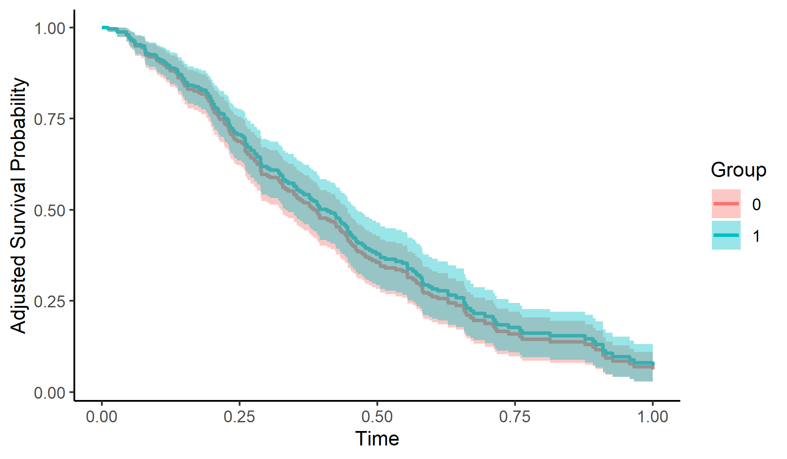
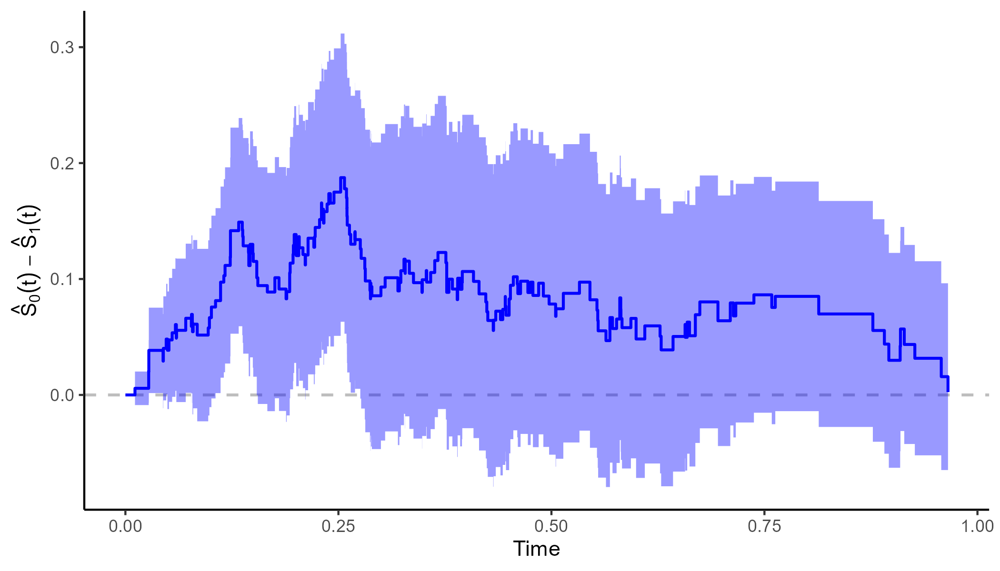

Author: Robin Denz
Description
adjustedCurves is an R-Package which can be used to calculate and plot confounder-adjusted survival curves + confidence intervals as well as cause-specific confounder-adjusted cumulative incidence functions + confidence intervals using a variety of methods. It provides a convenient wrapper around existing R-Packages on the topic and adds additional methods and functionality on top of it. Those additional features include the calculation of adjusted restricted mean survival times and testing whether two confounder-adjusted survival curves are different in a given interval.
Detailed descriptions of each method can be found in the literature cited in the documentation.
Installation
A stable version can be installed directly from CRAN using:
install.packages("adjustedCurves")The developmental version can be installed using the devtools R-Package:
Bug Reports and Feature Requests
If you encounter any bugs or have any specific feature requests, please file an Issue.
Examples
This minimal example shows how to calculate and plot adjusted survival curves using Direct Adjustment with this package:
library(adjustedCurves)
library(survival)
# simulate some data as example
set.seed(31)
sim_dat <- sim_confounded_surv(n=250, max_t=1.2, group_beta=0)
sim_dat$group <- as.factor(sim_dat$group)
# estimate a cox-regression for the outcome
cox_mod <- coxph(Surv(time, event) ~ x1 + x2 + x4 + x5 + group,
data=sim_dat, x=TRUE)
# use it to calculate adjusted survival curves
adjsurv <- adjustedsurv(data=sim_dat,
variable="group",
ev_time="time",
event="event",
method="direct",
outcome_model=cox_mod,
conf_int=TRUE)
# plot with confidence intervals
plot(adjsurv, conf_int=TRUE)
Here is an example of how to calculate and plot adjusted survival curves using Inverse Probability of Treatment Weighting:
# estimate a treatment assignment model
glm_mod <- glm(group ~ x2 + x3 + x5 + x6, data=sim_dat,
family="binomial"(link="logit"))
# use it to calculate adjusted survival curves
adjsurv <- adjustedsurv(data=sim_dat,
variable="group",
ev_time="time",
event="event",
method="iptw_km",
treatment_model=glm_mod,
conf_int=TRUE)
# plot with confidence intervals
plot(adjsurv, conf_int=TRUE)
It is also possible to plot the difference between two curves using the plot_curve_diff() function:
plot_curve_diff(adjsurv, conf_int=TRUE, color="blue")
To test whether the two adjusted survival curves are different in a specified interval (here 0 to 0.75), the adjustedsurv call has to be made with bootstrap=TRUE:
adjsurv <- adjustedsurv(data=sim_dat,
variable="group",
ev_time="time",
event="event",
method="direct",
outcome_model=cox_mod,
conf_int=TRUE,
bootstrap=TRUE,
n_boot=1000)
adj_test <- adjusted_curve_test(adjsurv, from=0, to=0.75)
summary(adj_test)More examples can be found in the documentation and the vignettes.
Citation
The main paper associated with this R-Package is:
Robin Denz, Renate Klaaßen-Mielke, and Nina Timmesfeld (2023). A comparison of different methods to adjust survival curves for confounders. Statistics in Medicine. 42.10, pp. 1461-1479. doi:10.1002/sim.9681
In addition, the relevant primary literature of the respective method should be cited. This can be found in the documentation of the method.
License
© 2021 Robin Denz
The contents of this repository are distributed under the GNU General Public License. You can find the full text of this License in this github repository. Alternatively, see http://www.gnu.org/licenses/.